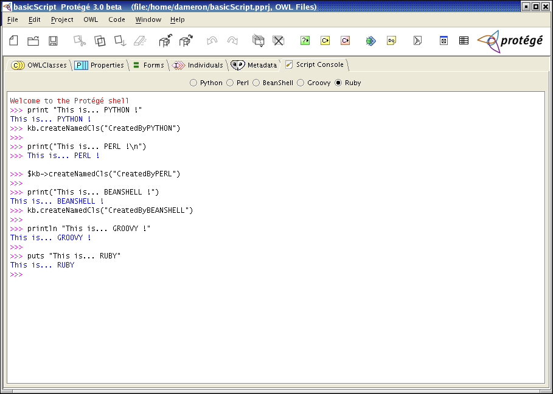
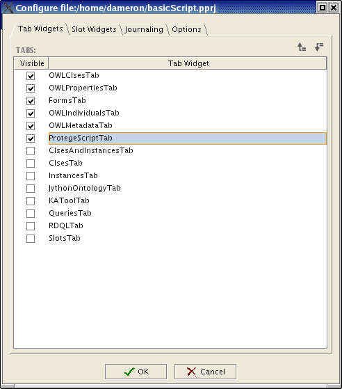

Protégé Script Console
A script console for editing macros for Protégé
The script console is a tab for the Protégé ontology development platform. It provides a scripting environment for manipulating an ontology. It is compatible with both the traditionnal Protégé environment and with the OWL Plugin. It can be used to
- reuse some existing functions from other scripts or java classes;
- write your own scripts for designing an intermediate representation of an ontology;
- define your own functions for performing tasks such as reasoning or consistency checking.

Supported languages
The script console relies on Apache's Bean Scripting Framework (BSF). Therefore, any BSF-compliant script language can easily be integrated. So far, the following languages are supported:
Resources
The subversion repository for this project is http://smi-protege.stanford.edu/repos/protege/protege-script-console/trunk/, and you can also use this nice display.
- Download the stuff;
- Save it in the plugins subdirectory of your Protégé installation;
- Unzip it. It will create a edu.stanford.smi.protege.script with everything you need in it;
- Open a project;
- In the "Project" menu and choose "Configure...";
- In the menu, select "ProtegeScriptTab".

The Protégé Script Console plugin is released under the Mozilla Public License. It is provided as is. Your are free to use it, to distribute it and to modify it. Feedback is welcome.
The Protégé Script Console plugin relies on third-party software components.
- Bean Scripting Framework (BSF) provides scripting language support within Java applications, and access to Java objects and methods;
- Jython is a Java implementation of Python;
- BSFPerl is a BSF-compliant Java implementation of Perl;
- Beanshell is a BSF-compliant Java implementation of a Java-like scripting language;
- Groovy;
- JRuby is a BSF-compliant Java implementation of Ruby.
Changelogs
Version 0.18
- Fixed the groovy-dependent jar files for groovy-1.0beta10.
Version 0.16
- Fixed missing ant build file.
- Updated Groovy to version 1.0-beta10
Version 0.15
Version 0.14
- Fixed the backspace that was always erasing the last character in the command, not the character before the caret.
Version 0.13
- Fixed a minor bug that made the left arrow to behave as backspace.
Version 0.12
- If the system property edu.stanford.smi.protege.script.defaultScriptLanguage is set, then it is used to determine the default scripting language. Possible values are: "jython", "perl", "beanshell", "groovy", "jruby". The default value is "jython"
- If the system property edu.stanford.smi.protege.script.defaultScriptPath is set to a value that actually points to a file, then this file is executed on startup
- Hitting backspace key deletes one character or one indentation level
- Hitting enter on a line only composed of spaces brings the cursor at the beginning of the new line (no more indentation)
Version 0.11
- Tentative fix of the stdout capture and redirection to the console
- Updated groovy to 1.0-beta9
- Updated jruby to 0.8.0 (Full support for Ruby 1.8.x grammar)
- Improved doap file (default namespace + download URL + minor cleaning)
Olivier Dameron
Last modified: Wed Mar 30 10:59:36 PST 2005
 The RDF DOAP description of this project is doap.rdf
The RDF DOAP description of this project is doap.rdf